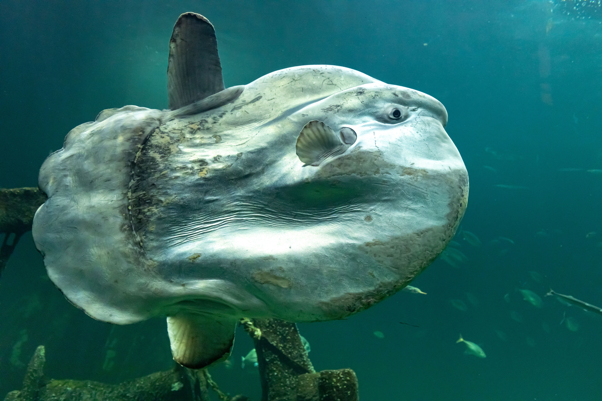

Sunfish: Gentle Giants of the Ocean

Ocean Sunfish by Pexels.
Welcome to my website all about ocean sunfish! These fascinating fish caught my attention because of
their unique appearance and quirky look. I hope you enjoy exploring my website and learning more about
these unusual ocean creatures. Thanks for stopping by!